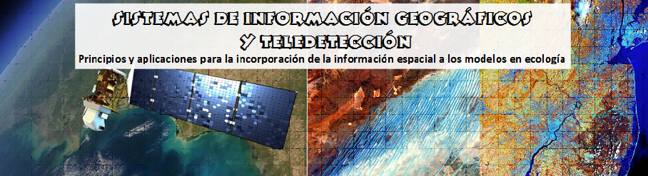

CURSO DE POSGRADO

El curso de posgrado “Sistemas de Información Geográficos y Teledetección: Principios y aplicaciones para la incorporación de la información espacial a los modelos en ecología” es un curso teórico-prácticos de 88hs y otorga 4 puntos para el doctorado de la FCEN.
Próxima edición: presencial durante el 2do cuatrimestre del 2024.
Link al cronograma 2024 (este cronograma es orientativo porque puede sufrir pequeñas modificaciones)
Este curso propone revisar los avances conceptuales y metodológicos de los Sistemas de Información Geográficos y la Teledetección en el contexto de la ecología, dando a los estudiantes de postgrado las herramientas necesarias para su propia investigación.
Son los objetivos del curso (1) que los estudiantes de postgrado adquieran los conceptos teóricos y prácticos de los Sistemas de Información Geográficos y Teledetección, (2) que adquieran las nociones teóricas para la compresión de procesos ecológicos con componentes espaciales, (3) que adquieran las habilidades practicas en el uso de las herramientas para analizar procesos y patrones ecológicos con estructura espacial, (4) que puedan explorar aspectos teóricos y de sus aplicaciones a problemas y ejemplos de investigación. Las prácticas se desarrollarán utilizando QGis, R (y sus librerías raster, sp, tmap, sf, sdm, dismo, entre otras) y Google Earth Engine. Esta previsto realizar una salida de campo de dos días a las localidades de Ceibas y Villa Paranacito, provincia de Entre Ríos en el mes de noviembre.
Docentes: Dr. Regino CAVIA, Dr. Sebastián TORRELLA, Dra. Carolina RAMOS.
Lugar: Dto. de Ecología, Genética y Evolución, Facultad de Ciencias Exactas y Naturales (UBA).
Horas totales: 88 hs de actividades sincrónicas.
Lugar: Dto. de Ecología, Genética y Evolución, Facultad de Ciencias Exactas y Naturales (UBA).
Forma de evaluación: Examen final y elaboración de informe escrito
Horario: Lunes y jueves de 14 a 21hs
Comienza: 25 de septiembre 2024 Finaliza: 29 de noviembre 2024
REQUISITOS, CUPOS, REQUERIMIENTOS PARA EL DICTADO
El curso estará dirigido a biólogos, agrónomos u otros profesionales de las ciencias naturales interesados en la aplicación de los Sistemas de Información Geográficos y Teledetección a la ecología. Se requieren conocimientos básicos de ecología (equivalentes a los de grado de la mayoría de las carreras mencionadas con orientación en ecología); también lectura en inglés y que estén habituados a trabajar con Excel, R y paquetes estadísticos. El cupo es de acuerdo a las disponibilidad del espacio en las aulas de computación.
PROGRAMA DEL CURSO DE POSGRADO: Sistemas de Información Geográficos y Teledetección: Principios y aplicaciones para la incorporación de la información espacial a los modelos en ecología
I – LA UBICACIÓN ESPACIAL, EL CONCEPTO DEL ESPACIO GEOGRAFICO
Ubicación espacial y topología. Cartografía como expresión de modelos ecológicos espaciales. su concepto, la diagramación y elaboración. Introducción a los sistemas de referencia, en especial sobre el Sistema Geocéntrico WGS84, Sistema de proyecciones UTM y los sistemas utilizados en Argentina en el presente y en el pasado (POSGAR).
II – INTRODUCCIÓN A LOS SISTEMAS DE INFORMACIÓN GEOGRÁFICOS
Definiciones de los Sistemas de Información Geográficos. Los componentes y las funciones de los Sistemas. Formas de representar y almacenar la información espacial en estos sistemas. El ordenamiento de la información. Cómo se almacena la información espacial en los Sistemas de Información Geográficos. La estructura de los archivos: formatos vectorial y ráster (grillas, imágenes), ventajas y desventajas de cada uno. Ejemplos en dos programas: QGis y Erdas.
III – INTRODUCCIÓN A LAS HERRAMIENTAS DISPONIBLES PARA LA INCORPORACIÓN, MANIPULACIÓN, GESTIÓN Y ANÁLISIS DE LOS DATOS ESPACIALES
Creación de bases de datos propias a partir de datos de campo con o sin GPS. Transformación de los datos a los distintos sistemas de referencia. Georrefernciación de fotografías aéreas y/o mapas digitalizados (escaneados). Incorporación de la información espacial desde estas fuentes. Incorporación de la información espacial desde fuentes externas. Herramientas: cálculos de área, perímetro, distancia, densidad, áreas de influencia (áreas buffer) y contigüidad.
IV – CARACTERIZACIÓN DEL ESPACIO, AUTOCORRELACION E INTERPOLACIÓN ESPACIAL
Ecología de paisajes: estructura y funcionamiento.Índices de paisaje: la estructura del paisaje como herramientas para el estudio de las relaciones patrón-proceso. Geoestadística y estadística espacial. Autocorrelación e interpolación espacial. Inversa distancia ponderada. Variable aleatoria regionalizada, covarianza, correlograma y semivariograma. Estacionariedad, Isotropía y anisotropía. Kriging.
V – MODELOS DE DISTRIBUCIONES DE ESPECIES, MODELOS DE NICHO Y DE APTITUD DE HABITAT USANDO LOS SIGs
Teoría y aplicación de los modelos de distribución de especies, modelado de nicho y modelos de aptitud de hábitat a distintas escalas espaciales. Modelos de dispersión de fauna y conectividad del paisaje usando modelos de costo de pasaje.
VI – INTRODUCCIÓN A LA TELEDETECCIÓN
Sistemas de observación de la superficie terrestre. Teledetección satelital. Bases físicas de la teledetección. Los datos, el espectro electromagnético y su contenido de información: mecanismos de interacción entre la energía electromagnética y los objetos de la superficie. Sistemas satelitales (ópticos, microondas (pasivas y activas), térmicos, láser, hiperespectrales): actualidad y futuro. Inventario, relevamiento y monitoreo de ecosistemas: clasificaciones supervisadas y no supervisadas. Evaluación de exactitud de clasificaciones derivadas con datos satelitales. Monitoreo de parámetros biofísicos de los ecosistemas. Tipo y calidad de productos de libre acceso: MODIS (LAI, EVI, FPAR, coberturas) y NOAA (series de tiempo de NDVI).